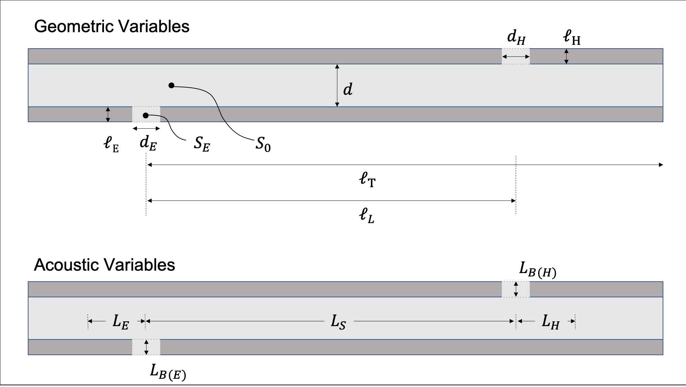
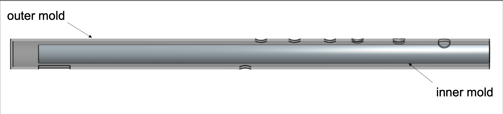
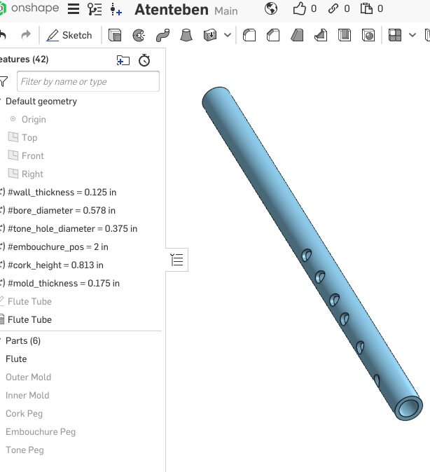

Flute
I learned to play the atenteben when I was 10, as part of my school's music club. The atenteben is a ghanaian bamboo flute, played vertically, much like a recorder. Since it is carved out of bamboo, the flutes are known to warp over time. Common practice is to submerge the flutes in water, to slow the warping effect. Since it is carved by artisans, there tends to be errors in pitch. Two flutes carved by the same maker will deviate. This makes ensemble playing rather difficult. Also, since flutes can't be tuned like string instruments, their range is fixed (most are in B-flat or C).
I decided to make a set of molds to manufacure flutes with that could be played in ensemble. The plan is to use a set of molds, and epoxy to allow for customizable molds.
Calculating Tone Holes
First, I calculated the dimensions of the flute, tones accurate to the first degree. There will likely be need for further correction. Viscious and thermal effects weren't taken into account. The calculation are based on [1] and [2], which were for concert flutes. Atenteben is different in several ways, requiring further adjustments. For each tone hole, the fundamental frequency of standing waves produced by a substitute tube of the same acoustic lenght, L_s, is used with a few corrections for the effects of the tone holes and embouchure holes, l_T and l_E.

CAD
Produced in OnShape.
 Prototype
Using materials from a hardware store, 3D printed parts and epoxy.
Frequency Analysis
Analysis of frequencies using Audacity and frequency decomposition in MATLAB.